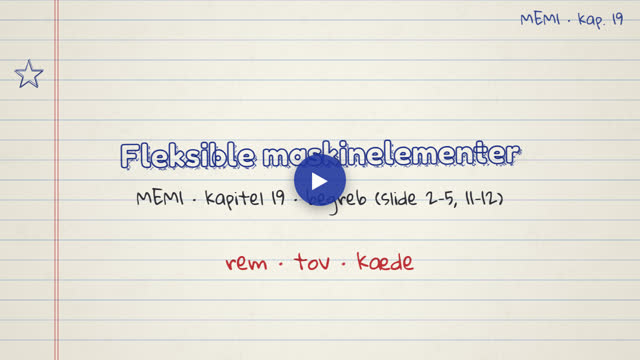
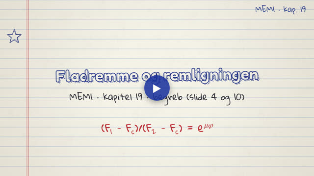
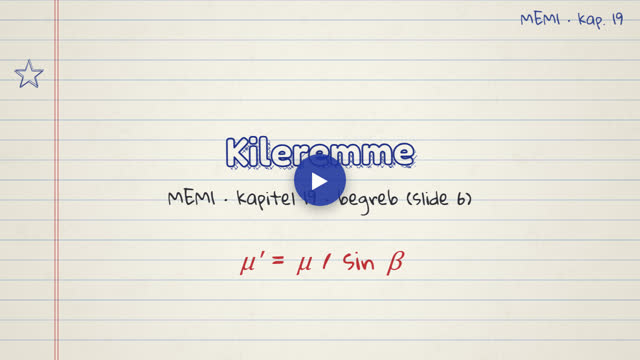
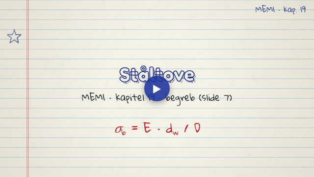
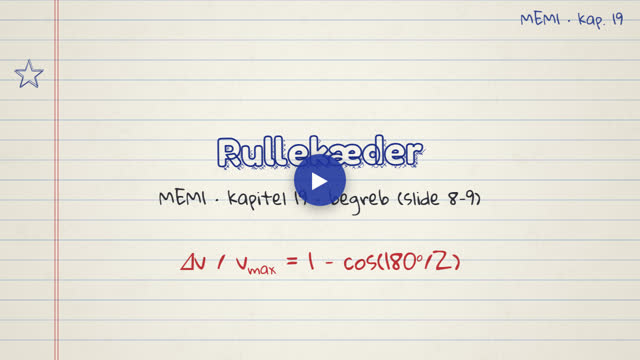
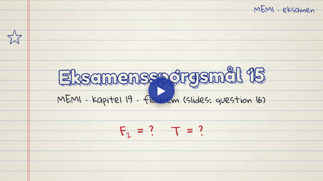
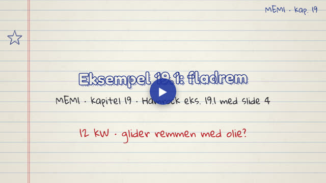
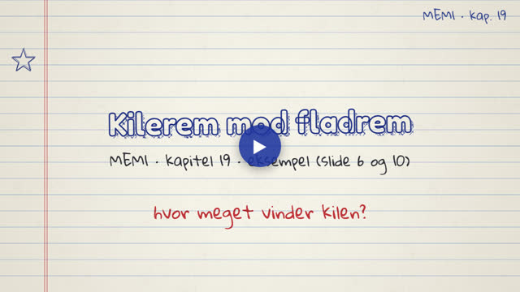
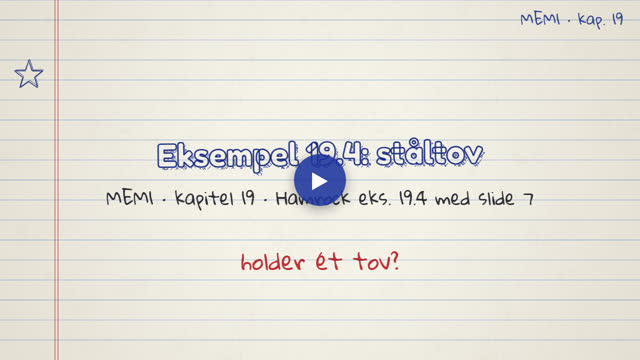
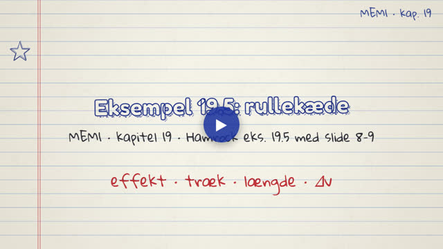

MEM1 · Fleksible maskinelementer. Videoerne tegnes live i din browser og fylder næsten ingenting.
Ét begreb pr. video, i slidernes rækkefølge.

Rem, tov eller kæde: friktion mod formlås, tandremme og resonans i lange spænd.

Remligningen udledt trin for trin, centrifugalkraften og den optimale remhastighed.

Kileeffekten: μ' = μ/sin β giver næsten tre gange så meget friktion.

Bøjespænding σ_b = E·d_w/D, F_b og den samlede designlast.

Polygoneffekten, mindst 17 tænder, slid/udmattelse og effektkravet.
Eksempler og eksamensopgaver fra kapitlet, trin for trin.

Eksamensspørgsmål 15 (slides: question 16): F2 = 1000 N og T = 400 Nm.

Eksempel 19.1: F1 = 1569 N, F2 = 805 N; med olie kun 8,29 kW, så remmen glider.

Kilerem mod fladrem: T = 576 Nm (+44 %) og halv forspænding ved samme moment.

Eksempel 19.4: F_b = 36,8 kN, F_total = 50,7 kN og n = 6,2; D_min = 640 mm.

Eksempel 19.5: 2,97 kW, 1247 N, 146 led og Δv/v = 0,79 %.